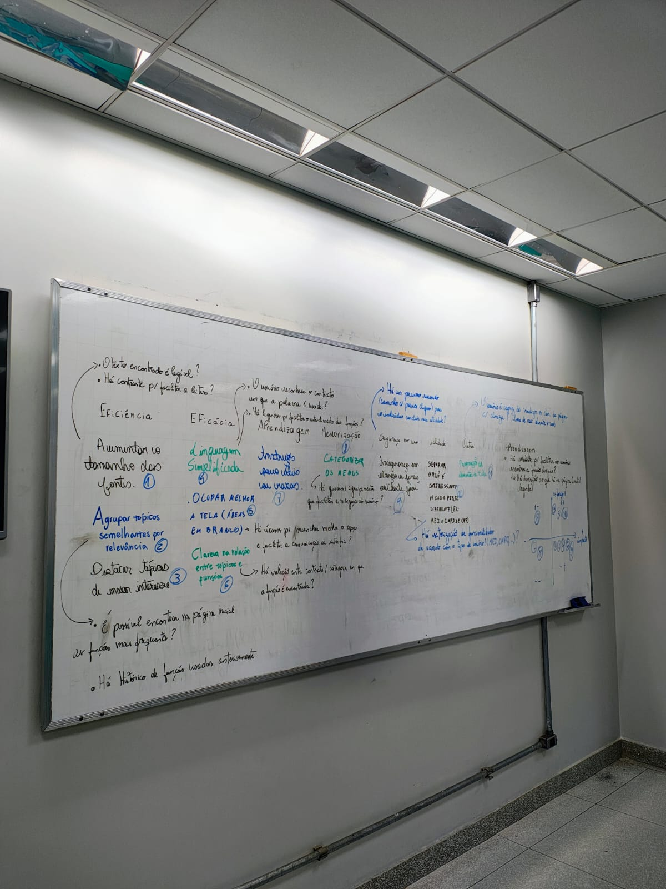

Roteiro de Brainstorming — Teste de Usabilidade do Portal e-CAC
Tabela de contribuição
| Autor | Tarefas Realizadas | Data |
|---|---|---|
| João Morais | Criou e documentou o roteiro do brainstorming | 30/04/2026 |
| João Morais, Rafael Melatti | Inclusão do resumo da sessão | 01/05/2026 |
| João Morais | Correção de erros | 05/05/2026 |
1. Apresentação
Este roteiro tem por objetivo guiar uma sessão de brainstorming em grupo voltada a encontrar problemas de usabilidade no portal e-CAC (Centro Virtual de Atendimento ao Contribuinte) da Receita Federal do Brasil, e, posteriormente, prototipar uma solução de IHC com base nos problemas informados pelos participantes. A proposta segue a perspectiva da Análise de Requisitos proposta por MAYHEW (1999), mostrado no livro de BARBOSA (2021, p. 110)[ref.].
Diante dessa perspectiva, decidimos estruturar um brainstorming para avaliar quais são as requisições e expectativas dos usuários.
2. Objetivos da sessão
- Coletar coletivamente percepções, dificuldades e impressões sobre o uso do e-CAC, considerando os princípios éticos propostos por BARBOSA et al. (2021, p. 108)[ref.]
- Identificar potenciais violações de metas de usabilidade/heurísticas conforme definidas por MACIEL (s.d., p. 3)[ref.]: eficácia, eficiência, segurança, utilidade, aprendizagem (learnability) e memorização (memorability).
- Analisar oportunidades de melhoria que possam ser aprofundadas posteriormente em métodos formais de avaliação (Avaliação Heurística - BARBOSA (2021, p. 318)[ref.], Percurso Cognitivo - (2021, p. 323)[ref.], Teste de Usabilidade - BARBOSA, (2021, p. 341)[ref.]). Por consequência, prototipar uma solução de design com base nos dados coletados e processados.
3. Informações gerais
| Item | Descrição |
|---|---|
| Duração total | 45 a 60 minutos |
| Participantes | 3 integrantes |
| Materiais | Quadro físico, folhas de papel, cronômetro, acesso ao e-CAC |
| Papéis | 1 moderador, 1 redator, demais participantes |
4. Etapas do roteiro
Etapa 1 — Aquecimento e nivelamento contextual (5 min)
Segundo BARBOSA (2021), a análise de IHC parte da compreensão do contexto de uso[ref.] — quem usa, para quê, em quais condições. Com isso, nessa etapa, exploraremos o contexto de uso dos usuários baseando-se nas perguntas abaixo:
Dinâmica "Conta sua experiência": cada participante responde em até 30 segundos:
- Você já utilizou o e-CAC? Com qual finalidade?
- Qual foi sua primeira impressão ao acessar o sistema?
- Conseguiu concluir a tarefa pretendida?
- Teve que sair da página para desfazer alguma operação indesejada?
Etapa 2 — Exploração guiada da interface (5 min)
Inspirada na ideia de Percurso Cognitivo - BARBOSA (2021, p. 322)[ref.] e Teste de Usabilidade - BARBOSA (2021, p. 342)[ref.] propostos por BARBOSA (2021). Cada participante (ou dupla) executa uma tarefa real no e-CAC, registrando livremente observações.
Sugestões de tarefas:
- Acessar a caixa postal do contribuinte
- Consultar pendências fiscais
- Emitir uma certidão negativa de débitos
- Localizar informações sobre declaração de Imposto de Renda
Os registros devem incluir: pontos de confusão (funções pouco claras e ambíguas), terminologia obscura, lentidão da plataforma, erros e mecanismos de arrependimento, frustrações e também aspectos positivos.
Etapa 3 — Brainwriting 6-3-5 (adaptado, para este trabalho para 3-3-5) (6 min)
Técnica para coletar dados de múltiplas perspectivas de forma silenciosa.
Como funciona: 6 participantes (adaptados no nosso caso para 3), cada um escreve 3 ideias em 5 minutos e passa a folha (ou frame digital) ao colega ao lado, que adiciona 3 novas ideias. Repete-se até a folha voltar ao primeiro participante.
Pergunta-guia: "Quais problemas de usabilidade, ou seja, problemas que dificultam o uso da plataforma você percebeu no e-CAC?"
Etapa 4 — Crazy 8s adaptado (8 min)
Cada participante divide uma folha em 8 partes e tem 8 minutos para listar 8 problemas distintos. A restrição força quantidade e quebra bloqueios.
Etapa 5 — Diagrama de afinidades (8 min)
O grupo agrupa suas observações por temas. As categorias que frequentemente aparecem nesse tipo de sistema seguem o proposto por MACIEL (s.d., p. 3)[ref.]:
- Eficácia: o usuário consegue concluir suas tarefas?
- Eficiência: quantos cliques, quanto tempo, quanto esforço cognitivo?
- Aprendizagem: um usuário novato consegue se virar sozinho?
- Memorização: quem usa esporadicamente lembra como fazer?
- Segurança no uso: o sistema previne erros graves e permite recuperação?
- Utilidade: o sistema oferece o que o contribuinte realmente precisa?
Outros agrupamentos: linguagem e terminologia fiscal/contábil, feedback do sistema, acessibilidade, login (feito pelo gov.br), responsividade móvel, arquitetura da informação.
Etapa 6 — Reformulação como "Como poderíamos..." (HMW) (8 min)
Para cada mapeamento feito a partir das ideias propostas pelos participantes, o grupo reformula os problemas como perguntas provocativas. Esta etapa converte queixas em possíveis elementos do novo design, transição que SILVA E PÁDUA (2012, p.39)[ref.] descreve, a partir de MAYHEW (1999), como passagem do diagnóstico para o reprojeto.
Exemplo:
Problema: "Usuários não distinguem 'Caixa Postal' de 'Mensagens'."
HMW: "Como poderíamos tornar a comunicação oficial da Receita imediatamente reconhecível para o contribuinte?"
Etapa 7 — Priorização: matriz Esforço × Impacto (7 min)
Baseado em GASPAR (2022)[ref.], os HMWs são posicionados em um plano cartesiano: eixo X = esforço de implementação (baixo→alto), eixo Y = impacto na experiência (baixo→alto). O quadrante "alto impacto / baixo esforço" concentra as vitórias rápidas.
Etapa 8 — Fechamento e síntese (5 min)
Roda final em que cada participante apresenta:
- 1 problema mais crítico identificado
- 1 ideia de melhoria mais relevante
- 1 ponto que merece investigação aprofundada
O moderador consolida o material em um documento único, que servirá de insumo para etapas posteriores: avaliação heurística, percurso cognitivo, prototipação ou teste com usuários, conforme o proposto por BARBOSA (2010).
5. Diretrizes para o Moderador
- Suspender o julgamento durante as etapas geradoras. Toda ideia é registrada.
- Cronometrar rigorosamente. A restrição temporal é aliada da criatividade.
- Separar o "o quê" do "como". O foco da sessão é diagnóstico, não solução técnica.
- Documentar tudo: prints, fotos do quadro, exportação digital. O material registrado é fonte primária para a parte escrita do trabalho.
6. Resultados esperados
Ao final da sessão, o grupo deverá ter produzido:
- Lista bruta de problemas e percepções (Etapas 3 e 4).
- Diagrama de afinidades organizado por temas (Etapa 5).
- Conjunto de perguntas "Como poderíamos..." priorizadas (Etapas 6 e 7).
- Síntese final com problemas críticos e próximos passos investigativos (Etapa 8).
Estes artefatos constituem a base para as etapas formais de avaliação de IHC previstas para o trabalho.
7. Referências
BARBOSA, S. D. J.; SILVA, B. S. Interação Humano-Computador. Rio de Janeiro: Elsevier, 2010.
MACIEL, Cristiano; LUIS, José; NOGUEIRA, T; et al. Avaliação Heurística de Sítios na Web. [s.l.: s.n., s.d.]. Disponível em: https://marcelohsantos.com/aulas/include/2022-1/projeto_Interface_Usuario/Aula7_artigo.pdf. Acesso em: 5 maio 2026.
PÁDUA, Clarindo Isaías Pereira da Silva e. Engenharia de usabilidade: material de referência. Belo Horizonte: [s.n.], ago. 2012. Apostila. Disponível em: https://homepages.dcc.ufmg.br/~clarindo/arquivos/disciplinas/eu/material/referencias/apostila-usabilidade.pdf. Acesso em: 6 maio 2026.
GASPAR, Larissa. Design Thinking e projetos culturais: como aplicar? - Incentiv. Disponível em: https://incentiv.me/blog/2022/03/10/design-thinking-e-projetos-culturais-como-aplicar/. Acesso em: 7 maio. 2026.
8. Agradecimentos
Agradecemos ao Professor André Barros e aos colegas de grupo 01 pela contribuição para o desenvolvimento deste roteiro.
A elaboração inicial deste roteiro contou com o apoio do Claude, assistente de IA desenvolvido pela Anthropic, utilizado como ferramenta de estruturação e sistematização do conteúdo. As referências teóricas, decisões metodológicas e adequação ao contexto da disciplina permanecem de responsabilidade do(a) autor(a).
Resumo da sessão de Brainstorming por etapas
Etapa 1 — Aquecimento e nivelamento contextual
Antes de iniciarmos a sessão, os participantes foram submetidos a uma triagem, onde confirmaram seu interesse em participar, responderam a um termo de consentimento, e foram informados da possibilidade de tirar eventuais dúvidas sobre os aspectos éticos com o moderador. Em seguida, conforme o roteiro baseado em BARBOSA (2021), os participantes responderam às seguintes perguntas:
- Você já utilizou o e-CAC? Com qual finalidade?
- Qual foi sua primeira impressão ao acessar o sistema?
- Conseguiu concluir a tarefa pretendida?
- Teve que sair da página para desfazer alguma operação indesejada?
Encontrou-se que 3 dos 4 indivíduos eram contribuintes. 2 afirmam ter declarado o Imposto de Renda por meio do e-CAC, e o terceiro relata ter usado o e-CAC para baixar um boleto de devolução da contribuição. O quarto participante nunca havia utilizado a plataforma.
Etapa 2 — Exploração guiada da interface (5 min)
Nessa etapa, o moderador disponibilizou seu computador, com seu login e senha, para que os participantes pudessem explorar a plataforma seguindo um cenário de uso. Os cenários sugeridos foram: Declarar o Imposto de Renda, Buscar o boleto de devolução de parte da contribuição e, com o usuário inexperiente, ter contato com a plataforma sem destino certo, buscando alguma função que cumprisse o objetivo almejado.
Etapa 3 — Brainwriting 3-3-5 (6 min)
Foi disponibilizado aos participantes uma folha de papel e uma caneta para que pudessem escrever seus relatos sobre problemas da plataforma. A proposta feita pelo moderador foi: "Escreva 3 problemas que você teve baseado nessa simulação."
Etapa 4 — Crazy 8s adaptado (8 min)
Essa etapa foi unida ao Brainwriting 3-3-5 e ao Diagrama de Afinidades (Etapa 5).
Etapa 5 — Diagrama de afinidades (8 min)
Após os participantes escreverem seus relatos, foram disponibilizados canetões e um quadro branco para que pudessem enquadrar suas ideias nos temas:
- Eficácia: o usuário consegue concluir suas tarefas?
- Eficiência: quantos cliques, quanto tempo, quanto esforço cognitivo?
- Aprendizagem: um usuário novato consegue se virar sozinho?
- Memorização: quem usa esporadicamente lembra como fazer?
- Segurança no uso: o sistema previne erros graves e permite recuperação?
- Utilidade: o sistema oferece o que o contribuinte realmente precisa?
- Outros: inclui linguagem/terminologia obscura e outros.
Etapa 6 — Reformulação como "Como poderíamos..." (HMW) (8 min)
Dadas as ideias coletadas e classificadas, o grupo reformulou os problemas como perguntas provocativas, que auxiliaram os desenvolvedores e designers a cumprir o que foi proposto pelos usuários. A foto do quadro com as perguntas pode ser vista abaixo:

Fonte: Elaborada pelos autores (2026)
Etapa 7 — Priorização: matriz Esforço × Impacto (7 min)
Foi feita uma matriz Esforço × Impacto para mapear quais problemas podem ser resolvidos mais facilmente, com mais dificuldade, ou que causam maior impacto na experiência do usuário.
Etapa 8 — Fechamento e síntese (5 min)
O moderador finalizou a sessão perguntando aos participantes:
- 1 problema mais crítico identificado
- 1 problema que poderia ser resolvido, mas não de imediato
- Uma sugestão de melhoria
Após todos responderem, a sessão foi encerrada com um agradecimento e os participantes foram dispensados.
Gravação
Referências
- BARBOSA, S. D. J.; SILVA, B. S. da. Interação humano-computador. Rio de Janeiro: Elsevier, 2010.
Versionamento
| Versão | Data | Descrição | Autor(es/as) | Revisor(es/as) |
|---|---|---|---|---|
| 1.0 | 30/04/2026 | Reunião de Brainstorming | João Morais, Rafael Melatti | Lucas Gabriel |
| 1.1 | 02/05/2026 | Adição da gravação do brainstorm | Rafael Melatti | - |
| 1.2 | 05/05/2026 | Correção de erros | João Morais | - |